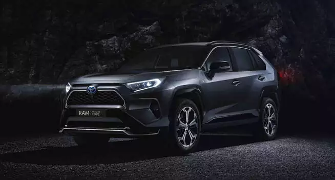

RAV4 Plug-in Hybrid ― флагман лінійки гібридів бренда, який забезпечує оптимальне у своєму класі поєднання потужності та екологічності.
Офіційний дилер Тойота Центр Київ «Автосаміт» радий повідомити, що громадяни нашої країни вже сьогодні можуть придбати Тойота РАВ4 Плагін Гібрид та переконатися в його перевагах. У новому Rav4 були реалізовані всі кращі технології, використовувані виробником в плані гібридних силових установок. Цей кросовер створений на добре відомії платформі під назвою Toyota GA-K. Він оснащується повнопривідною електричною інтелектуальною системою Toyota AWD-i. Гібридна технологія в парі з бензиновим ДВЗ об'ємом 2,5 літрів видає вихідну потужність в 306 к.с. Прийнятна вартість Toyota Rav4 Plug-in Hybrid здатна приємно здивувати будь-якого автолюбителя. Ця машина сподобається як молодим людям, які прагнуть отримати динамічний засіб пересування, так і людям у віці, які бажають володіти стильним, потужним авто. Чіткі стрімкі лінії, яскраве виконання передньої корми і елегантна задня частина не залишать нікого байдужим. Всередині автомобіль виглядає дійсно дорого. Творці інтер'єру врахували все до самих дрібниць. Покупці зможуть отримати: